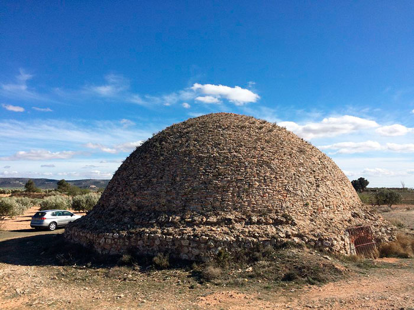

Historia de la Refrigeración: De la Prehistoria a la Actualidad
Cuando hablamos de refrigeración nos vienen a la cabeza potentes máquinas de frío que refrigeran los alimentos en un breve periodo de tiempo. Pero lo cierto es que la práctica de la refrigeración se lleva realizando desde tiempos inmemorables. Ya en la prehistoria el hombre se vio en la necesidad de almacenar los alimentos en cuevas frías o en la nieve para así tener reservas.
A lo largo de la historia hemos podido ver su evolución hasta llegar a los equipos de refrigeración que disponemos hoy en día:
La refrigeración en la Antigua Grecia e Imperio Romano
Los griegos y romanos solían amontonar nieve en hoyos cavados en la tierra que eran aislados con paja y ramas. La nieve se convertía en hielo y se utilizaba en las épocas de más calor. Esta práctica se extendió por el Mediterráneo donde se siguió utilizando en las zonas más rurales hasta el siglo XX.

La refrigeración en el Antiguo Egipto
Los egipcios producían hielo llenando de agua vasijas poco profundas de arcilla para después colocarlas sobre un lecho de paja durante la noche. La paja impedía el paso del calor de la tierra a la vasijas y la poca profundidad de éstas favorecía la pérdida de calor. Si el tiempo era frío y seco la pérdida de calor formaba finas capas de hielo en la superficie.
La refrigeración en la Edad Media
En la India en el siglo IV y durante el periodo musulmán en la Península Ibérica se empezaron a utilizar los primeros métodos artificiales mediante procesos químicos. Mediante el uso de nitrato sódico y nitrato de potasio en el agua se conseguía disminuir la temperatura.
En el siglo XVI Blas Villafranca, un médico español asentado en Roma se dedicaba al enfriamiento del agua y el vino mediante mezclas refrigerantes pero fue en 1607 cuando se descubrió que con una mezcla de agua con sal, el agua se podía congelar.
La refrigeración en la Edad Moderna